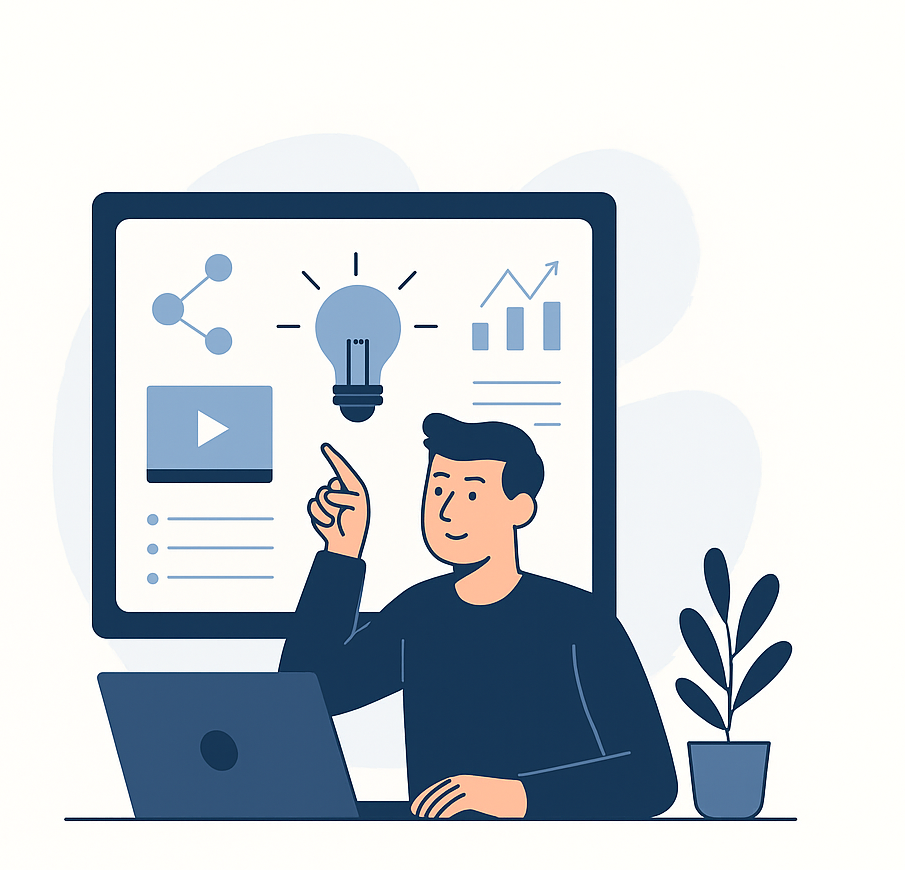
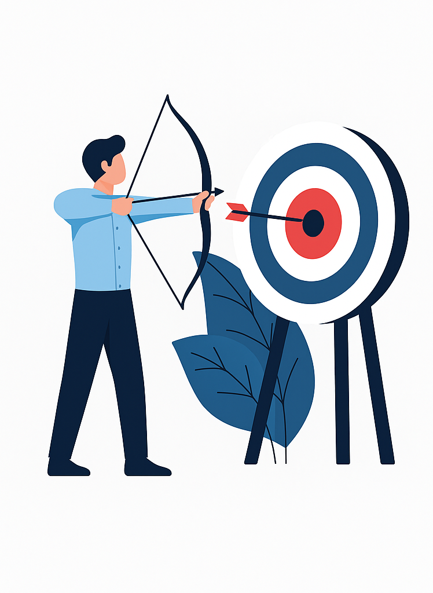
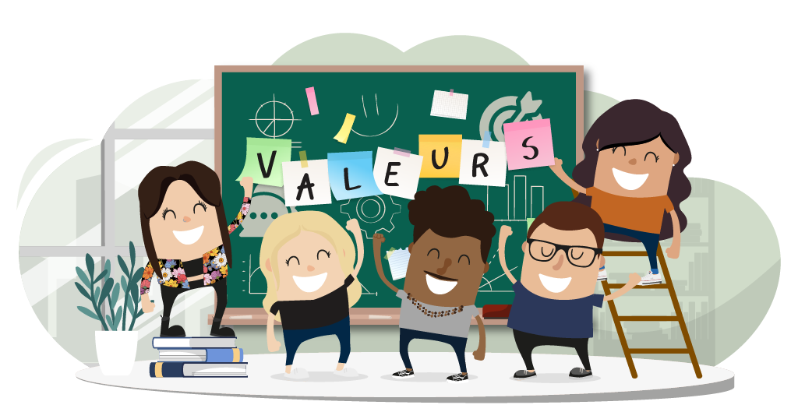

À propos de moi
Conseiller pédagogique · Technopédagogue · Concepteur de formation
Ma vision technopédagogique
La technopédagogie est pour moi bien plus qu'un domaine d'expertise — c'est une conviction profonde que les technologies numériques, lorsqu'elles sont intégrées avec intention, ont le pouvoir de transformer en profondeur la manière dont les individus apprennent et se développent.
Je crois en une formation résolument centrée sur l'apprenant : accessible, engageante et adaptée à ses contextes de vie, qu'il s'agisse du milieu scolaire, de l'entreprise ou de la formation continue. Mon approche vise à réduire les obstacles à l'apprentissage tout en maximisant l'impact des dispositifs mis en place, grâce à des choix pédagogiques éclairés et des outils numériques judicieusement sélectionnés.
C'est cette vision — alliant rigueur andragogique, design pédagogique et culture numérique — qui guide chacun de mes mandats au Cégep de Rimouski et dans mes projets de recherche à l'Université Laval.

Mes objectifs professionnels

Mon ambition est de concevoir des expériences d'apprentissage qui ont un impact mesurable et durable — des formations qui ne se contentent pas de transmettre des contenus, mais qui transforment réellement les pratiques et développent les compétences dans la durée.
À court terme, je souhaite approfondir mon rôle de conseiller pédagogique au sein des Services aux entreprises du Cégep de Rimouski, en accompagnant davantage d'organisations dans l'analyse de leurs besoins de formation et la mise en œuvre de solutions pédagogiques sur mesure, intégrant les meilleures pratiques en e-formation et en apprentissage hybride.
À plus long terme, je me projette comme expert-conseil en technopédagogie, contribuant à des projets d'envergure qui repensent les modèles de formation professionnelle à l'ère du numérique, en lien étroit avec les milieux académiques et les organisations du travail.
Mes valeurs
Mon travail est ancré dans des valeurs fondamentales qui guident mes décisions pédagogiques et mes relations professionnelles. Ces principes ne sont pas de simples mots : ils se traduisent concrètement dans chaque formation que je conçois et chaque accompagnement que j'offre.
